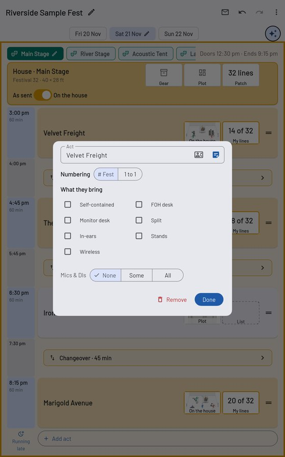
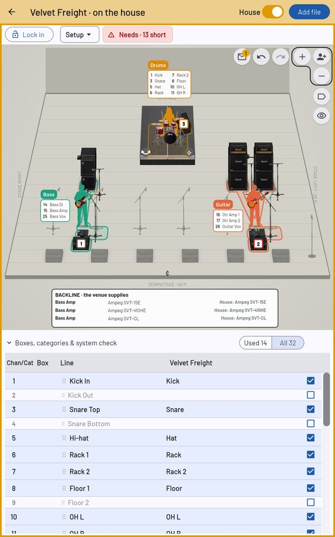

The Show page

Days and stages
Show is the only page upright. The show's name is top left and the day chips are centred. To add a day or a stage, or rename the show, use the pencil beside the name (Add day, Add stage, Rename show); sideways they are in Options → Show. Tap the day on show to change its date and doors. The stage chips are in teal directly under the days, with the Doors / Ends time at the right end of the same line. A stage that doesn't play on the day you picked reads “· not on Sat”.
The round AI button at the end of the days line reads every band that has no plot yet (Read every band with no plot). Advance (what's missing) and Past bands are in Options, the ⋮ at the top right, under Show. Hold and Soundcheck are not in a menu any more.
The House row
Under the stage chips, and staying put while the schedule scrolls: House · Main Stage, the patch's name and the stage size, one switch — As sent / On the house — and three small windows, Gear, Plot and Patch. Each opens the House window — the house's Gear list, its master plot or its master patch, filling the page; its back arrow, or Android's Back, returns to the show.
The running order
The time bar on the left draws each act as tall as its set, changeovers in grey and a red line at the time now. Tap an act's block, or the grey block under it, for its time window: the start, the set length and the changeover (each − / + 5 min) and Remove from the day. Hold an act's time to move it — the first act sets the show's start. Drag the ☰ handle to reorder.
Each act row shows its time and its name and, when it needs you, one orange mark — Not checked against what they sent, A newer file than the one read or a missing plot. Tap the mark to see why and go there (Compare, Open or Read again). At the right are two tiles, Plot and List (below), and the ☰ handle. Tap the band's name for the band's box.
With the House switch off the two tiles show what the band sent: their plot, and their input list as read. With the switch on the page is amber, the tiles read On the house and My lines, and the band's window shows the band on the house's stage, or the whole house patch with the band's inputs on their lines. In that window, under the bar, are Lock in and Setup (Inputs, Outputs; Send / print this plot; Clear). The switch in a band's window is the same switch as the House row's: flipping one flips the other.
Adding acts
Add act (under the last act): From My plots; From a file (their plot, a PDF rider, a photo); From a schedule (paste the promoter's running order, or a photo, PDF or web page of it); or No plot yet – on the house / No plot yet – empty stage (build their plot on the house's gear, or from scratch without the house). The band stays that kind while it has nothing sent and no read: an empty-stage band is never on the house, and an on-the-house band always is.
The band's box

Tap a band's name. Act (the name), with a Contact and a Notes icon; Numbering (# Fest or 1 to 1); What they bring (self-contained, FOH or monitor desk, split, in-ears, mics and DIs, stands, wireless). With a read to work from: Read again (asks first, with the price, or offers the saved read free), Put back as they sent (lays the saved read on the house again; it asks first, lists what will be dropped, and what it did is in Messages) and Read on this tablet. Remove takes the band off the day; Done closes. Spike tape, advance and the backline picks are switched off for now.
A band's window

Tap a band's Plot or List tile. The bar has the band's name, a Plot | List switch (not for a band that has not been read), the House switch and, in the corner, Add file (nothing sent yet), Read (their files are there but not read) or Compare (read: set what they sent against the read; Looks right marks it checked). Files beside Compare adds or takes off a file. Off the house, List is their patch as read: tap a row to open that piece, and + a line the read missed adds one. On the house, List is the house patch with the band on its lines. The round buttons in the corner of the stage are Messages (the envelope), Undo, Redo, +, Add person, −, Labels and the eye.
On the night
- Running late sits under the times: everything after slides by what you give it.
- A day's soundcheck and line check come in with an imported schedule; tap its bar at the top to edit it. Setting one up from a menu, and Hold, are switched off for now (a hold made in an older build still shows Release and HELD).
- Options (the ⋮ at the top right) has Settings, Messages, Show (Shows…, Advance, Past bands, More saving, Cloud, Print), Plot, Export, Stage and Help.